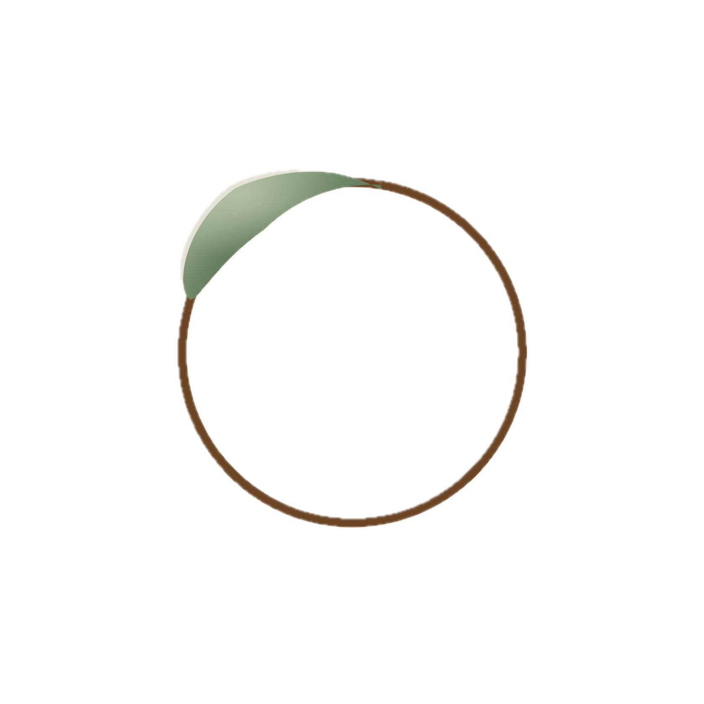

You found it. Welcome to Ouro.
Veni, vidi, vici.
Vegemite.
The ouroboros — the ancient image of a snake eating its own tail — appears in my book as a conceptual anchor for digital placemaking studies. It represents the relational, cyclical nature of urban politics: institutions and communities and technologies continuously reconstituting each other, never arriving at a final state.
Ouro is that idea made into a practice. A commitment to working with communities and institutions in the ongoing, unfinished, generative process of place — not delivering solutions, but helping people navigate the systems that shape where and how they live.
Ouro works with place-based and regenerative communities navigating institutional systems — helping them articulate their vision, access resources, and build relationships with the governments and organisations that can support their work.
Ouro is rooted in regional Victoria — South Gippsland specifically — and connected to the wider ecosystem of people working on regenerative futures in communities across the state. The physical embeddedness matters: this isn't advisory work parachuted in from the city. It grows from being here, knowing the neighbours, understanding the land.
I'm Isabel. I wrote the book on digital placemaking — literally — and spent years inside government learning how institutions actually work versus how they're supposed to. Ouro is what happens when those two things combine with the decision to actually live in the places I care about.
I tend a garden, commute between Melbourne and South Gippsland, and share a Passive House with my partner and our cat Ophelia, who has opinions about everything. I restore via Chinese audiobooks and long drives through the Strzelecki Ranges.
I'm particularly drawn to Hannah Arendt's idea of natality — the capacity to begin something genuinely new — and Bruno Latour's insistence that the social is always being assembled, never finished. Ouro is an attempt to work from those convictions rather than just write about them.
Ouro is early. If you're working on something place-based and regenerative — or if you think there's something worth talking about — I'd like to hear from you.
此处是给真正好奇的行动者。你好。🐾